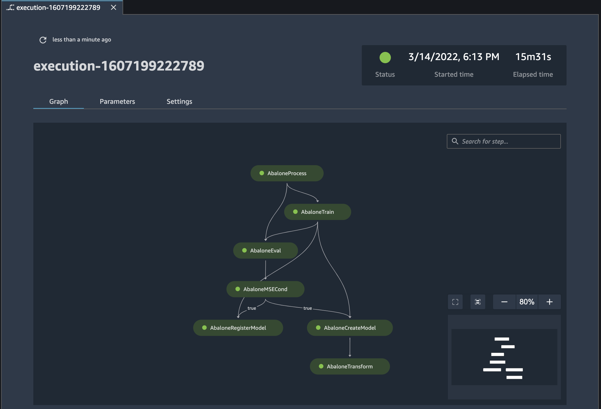
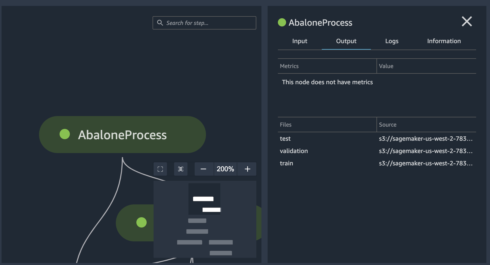
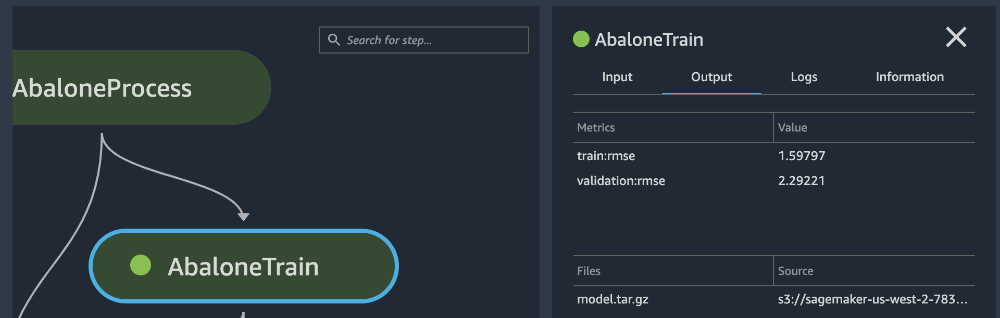
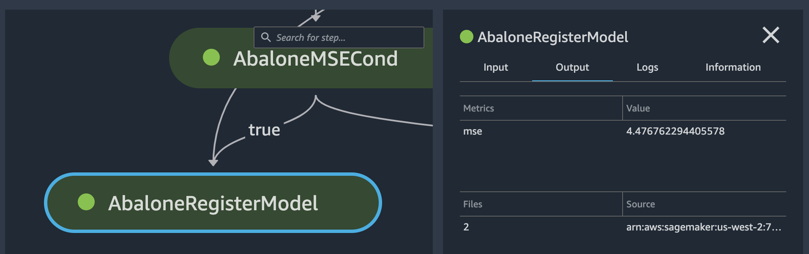

Track the Lineage of a SageMaker ML Pipeline
In this tutorial, you use Amazon SageMaker Studio to track the lineage of an Amazon SageMaker ML Pipeline.
The pipeline was created by the
Orchestrating
Jobs with Amazon SageMaker Model Building Pipelines
Lineage tracking in Studio is centered around a directed acyclic graph (DAG). The DAG represents the steps in a pipeline. From the DAG you can track the lineage from any step to any other step. The following diagram displays the steps in the pipeline. These steps appear as a DAG in Studio.
Prerequisites
-
Access to Amazon SageMaker Studio. For more information, see Onboard to Amazon SageMaker Domain.
-
Familiarity with the SageMaker Studio user interface. For more information, see Amazon SageMaker Studio UI Overview.
-
(Recommended) A completed run of the example notebook.
To track the lineage of a pipeline
-
Sign in to SageMaker Studio.
-
In the left sidebar of Studio, choose the Home icon (
 ).
). -
In the menu, select Pipelines.
-
Use the Search box to filter the pipelines list.
-
Double-click the
AbalonePipelinepipeline to view the execution list and other details about the pipeline. Choose the Property Inspector icon ( ) in the right sidebar to open the TABLE PROPERTIES pane, where you can choose which properties to view. -
Choose the Settings tab and then choose Download pipeline definition file. You can view the file to see how the pipeline graph was defined.
-
On the Execution tab, double-click the first row in the execution list to view its execution graph and other details about the execution. Note that the graph matches the diagram displayed at the beginning of the tutorial.
You can drag the graph around (select an area not on the graph itself) or use the resizing icons on the lower-right side of the graph. The inset on the lower-right side of the graph displays your location in the graph.
 -
On the Graph tab, choose the
AbaloneProcessstep to view details about the step. -
Find the Amazon S3 paths to the training, validation, and test datasets in the Output tab, under Files.
Note
To get the full paths, right-click the path and then choose Copy cell contents.
s3://sagemaker-eu-west-1-acct-id/sklearn-abalone-process-2020-12-05-17-28-28-509/output/train s3://sagemaker-eu-west-1-acct-id/sklearn-abalone-process-2020-12-05-17-28-28-509/output/validation s3://sagemaker-eu-west-1-acct-id/sklearn-abalone-process-2020-12-05-17-28-28-509/output/test -
Choose the
AbaloneTrainstep. -
Find the Amazon S3 path to the model artifact in the Output tab, under Files:
s3://sagemaker-eu-west-1-acct-id/AbaloneTrain/pipelines-6locnsqz4bfu-AbaloneTrain-NtfEpI0Ahu/output/model.tar.gz -
Choose the
AbaloneRegisterModelstep. -
Find the ARN of the model package in the Output tab, under Files:
arn:aws:sagemaker:eu-west-1:acct-id:model-package/abalonemodelpackagegroupname/2